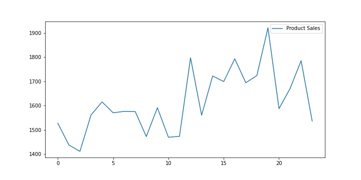
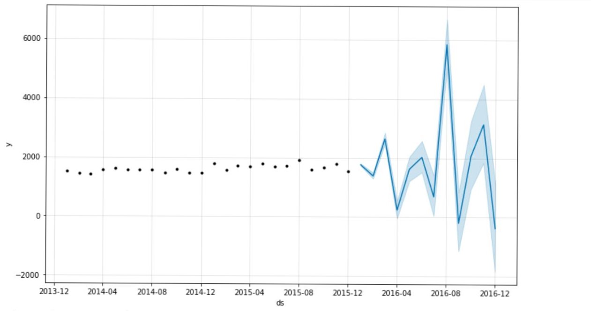
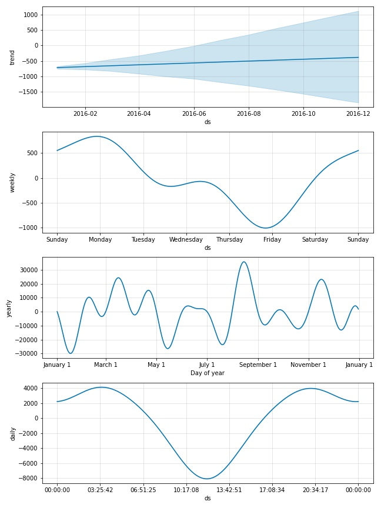

Welcome to Sales Forecasting
Sales of food products
Below is the visualization of Food products Sales forecasting using past sales data.

Sales forecasting of food products
Below is the Food products Sales forecasting for upcoming year using Time-series forecasting with Prophet.

Sales forecasting trends of food products
Below is the Food products Sales forecasting trend-
Daily,
Weekly and
Yearly
for upcoming year Time-series forecasting with Prophet.

The above Visualizations are for food products sales forecasting based on the past/historical data.
The conclusion drawn from them are as :
* Sales of food products are expected to rise around August 2016
and might go down around April, September and December 2016
* As per yearly trends, sales are expected to rise around
april, august and november end of 2016.
and sales might go down around
january end of 2016, begining of june 2016 and august 2016
* As per weekly trends, sales are expected to rise around
Weekends
might go down around thursday & friday
* As per daily trends, sales are expected to rise around
the day
and might go down around 10:00 am to 01:00 pm
* Using the above insights based on past year data ,certain changes can be made in the business model to enhance sales of food products.
Such as launcing diffferent offers,focus on marketing and many more.